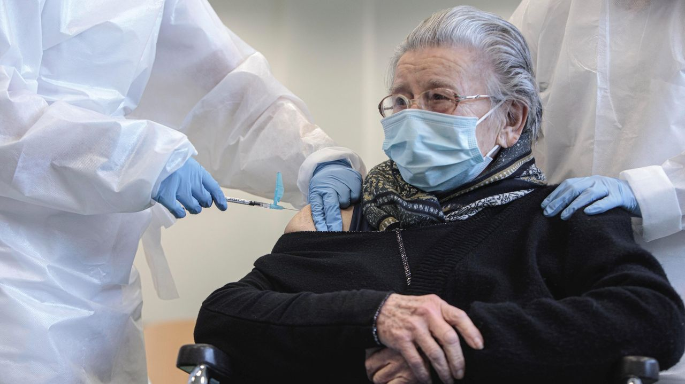

MÁS VÍCTIMAS: Las vacunas causan 600 casos nuevos de trastornos oculares y deja ciegas a 5 personas

Apóyanos en Patreon 🤝
Traducido de naturalnews.com por TierraPura.org
El gobierno del Reino Unido ha estado recopilando datos críticos sobre la seguridad de las vacunas de Pfizer/BioNTech y Oxford/AstraZeneca, y el último informe no muestra un buen panorama.
La primera dosis de la vacuna experimental de Pfizer/BioNTech se ha inyectado en los brazos de 5,4 millones de ciudadanos, y 500.000 de ellos han recibido una segunda dosis.Hasta el 24 de enero, se han registrado casi 50.000 informes de lesiones por esta vacuna específica, incluida la muerte repentina de 107 ciudadanos del Reino Unido.
🚨🚨🚨 Evite la censura de Internet suscribiéndose directamente a nuestro canal de Telegram, Safechat o Newsletter 👈🔔
Otros 1,5 millones de dosis de la vacuna de la Universidad de Oxford/AstraZeneca han llegado a los brazos de los ciudadanos del Reino Unido, lo que ha dado lugar a otros 21.032 casos de efectos secundarios.
Lea también: El Vaticano anuncia que los trabajadores que rechazan las vacunas pueden ser despedidos
Estos efectos secundarios se registraron hasta el 24 de enero de 2021, dentro del Esquema de Tarjetas Amarillas de la Agencia Reguladora de Medicamentos y Productos Sanitarios, y no incluye todas las lesiones relevantes y actualizadas.
La tasa actual de lesiones por vacunas (notificadas) es de 1 de cada 333 personas.Es probable que esta tasa de lesiones por vacunas sea mucho mayor porque la gente suele pensar y/o avergonzarse de notificar las lesiones por vacunas; muchas personas consideran que la vacunación es una solución 100% segura y eficaz y no se atreven a cuestionarla.Muchos médicos se niegan a aceptar que las lesiones por vacunas son reales.
Los efectos secundarios tampoco son problemas menores que se resuelven en un día.Estos efectos secundarios pueden alterar la vida causando derrames cerebrales, inflamación del corazón, parálisis muscular, ceguera y shock anafiláctico.
Antes de que se lanzaran las vacunas experimentales de ARNm (ARN mensajero), las empresas farmacéuticas firmaron contratos con todos los gobiernos importantes del mundo, para subvertir el estado de derecho y eximir a su empresa de la responsabilidad de todos los daños inevitables de las vacunas que sabían que se producirían.
Los informes más impactantes son los trastornos oculares.Al menos 634 personas fueron diagnosticadas con trastornos oculares después de la vacunación.
Una persona perdió la visión central, otra perdió la agudeza visual, treinta y una personas informaron de una visión deteriorada y ¡cinco personas se quedaron ciegas!
Pfizer/BioNTech ha provocado sesenta y nueve incidentes de parálisis de Bell, una enfermedad que paraliza los músculos de un lado de la cara.
El gobierno sigue restando importancia a las lesiones y muertes causadas por las vacunas, perpetrando un genocidio.
Las vacunas experimentales también tienden a provocar ataques autoinmunes en el sistema cardiovascular.Veintiuna personas sufrieron accidentes cerebrovasculares (apoplejías) después de tomar la vacuna.
Hubo otros casos cardiovasculares graves, como infarto del tronco cerebral, infarto del cerebelo, accidente cerebrovascular, oclusión de la arteria cerebral, hemorragia cerebral, infarto cerebral, hemorragia intracraneal, accidente cerebrovascular isquémico y hemorragia subaracnoidea.
Según los organismos reguladores, a las mujeres embarazadas no se les debe aplicar estas vacunas experimentales.Según los fabricantes, hay una cantidad limitada de datos sobre el uso de la vacuna COVID-19 mRNA BNT162b2 en mujeres embarazadas.
https://www.youtube.com/watch?v=34p_7A62Dnw=15s
No se han completado estudios de toxicidad reproductiva en animales y, por lo tanto, la vacuna no se recomienda durante el embarazo.Sin embargo, el sistema de notificación de la Tarjeta Amarilla revela que algunas mujeres embarazadas se saltaron este proceso de selección y cuatro mujeres embarazadas sufrieron un aborto espontáneo tras la vacunación de Pfizer y dos sufrieron el mismo destino tras la vacunación de AstraZeneca.
En lugar de detener este experimento de vacunación masiva, los reguladores siguen restando importancia a estas situaciones y las justifican por la «edad avanzada» del paciente o por «condiciones subyacentes».
El gobierno del Reino Unido, sigue defendiendo a las compañías de vacunas:
«Una alta proporción de las personas vacunadas en la campaña de vacunación hasta ahora son muy ancianos, muchos de los cuales también tendrán condiciones médicas preexistentes.La edad avanzada y las enfermedades crónicas subyacentes hacen más probable que se produzcan efectos adversos casuales, especialmente teniendo en cuenta los millones de personas vacunadas.Por lo tanto, es importante que revisemos cuidadosamente estos informes para distinguir los posibles efectos secundarios de las enfermedades que habrían ocurrido independientemente de la vacunación».
Irónicamente, hace meses, cuando personas mayores con enfermedades subyacentes fallecían en los hospitales, su causa de muerte se codificaba automáticamente como «COVID-19».Este fraude médico sociopático nunca ha sido más atroz, espantoso y genocida.
Posted On: 2021-02-19T00:00:00
Content Date: 2021-02-19
Download Date: 2021-09-16
Document ID: L0C04G7DA